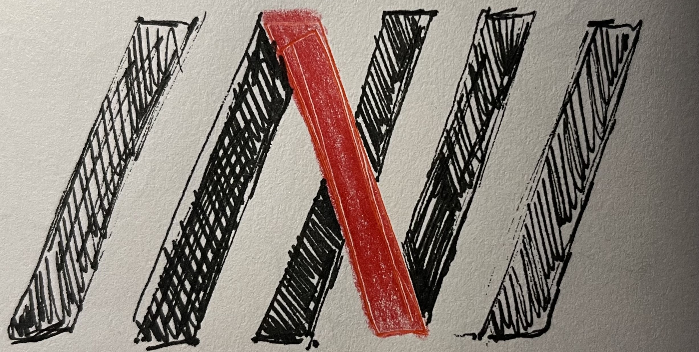

ROLE
Team of 7, Web and Graphic Designer
TIMELINE
3.5 Months
SOFTWARE AND SKILLS
Figma, Adobe PS, Branding, UI/UX
ROLE
Team of 7, Web and Graphic Designer
TIMELINE
3.5 Months
SOFTWARE AND SKILLS
Figma, Adobe PS, Branding, UI/UX

TEDxUW is the official organizer of TEDx events at the University of Waterloo. Since 2011, they have hosted 10 events to date, each packed with an incredible lineup of TEDx Talks. As the second in-person post-pandemic event, TEDxUW chose In the Odd Chance as their 2024 theme. Every year they create a website detailing the upcoming event, its theme, speakers, sponsors, and past event highlights. With recognition growing after their 2023 event, they thought it was high time to dedicate a separate team from marketing to build the website.
I was assigned to the website building team as a front-end designer. Given that this was my first time creating a website, there was much trial and error, countless Figma tutorials on YouTube, and I sought guidance through my team. I specifically designed the layout and animations of the homepage, blog page, and footer.
Our goal was to elevate information design through animations and layout, and maximize usability to increase web traffic.
How do we make an excitingly dynamic website to showcase fairly standard information?
As an event under the TEDx program, TED sets non-negotiable rules for organization and design that are to be followed accordingly. Each TEDx website has moderately the same quantity and categories of information, and this seldom changes from year to year.
TEDxUW 2024's theme is In the Odd Chance.
It signifies the message of embracing uncertainty as a catalyst for growth and opportunity. The theme is extremely broad and allows for various imageries to emerge from "odd" and "chance".
innovation, growth, opportunity, full potential
unexpected, uncertain, uncomfortable, unlikely, risk
roulette, bet, chance, probability, challenge
shooting star, night sky, dice, open doors
the dice concept was used later on for swag items
